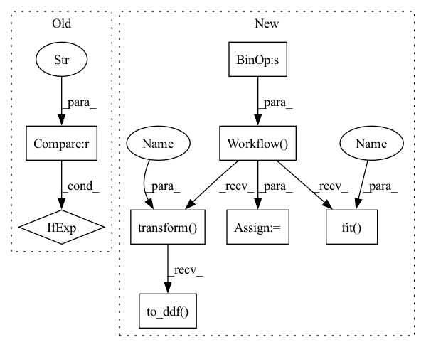

Pattern ID :39017

Before Change
@pytest.mark.parametrize("engine", ["parquet", "csv", "csv-no-header"])
@pytest.mark.parametrize("op_columns", [["x"], None])
def test_normalize(tmpdir, df, dataset, gpu_memory_frac, engine, op_columns):
cat_names = ["name-cat", "name-string"] if engine == "parquet" else ["name-string"]
cont_names = ["x", "y"]
label_name = ["label"]
After Change
@pytest.mark.parametrize("engine", ["parquet", "csv", "csv-no-header"])
@pytest.mark.parametrize("op_columns", [["x"], ["x", "y"]])
def test_normalize(tmpdir, df, dataset, gpu_memory_frac, engine, op_columns):
cont_features = op_columns >> ops.Normalize()
processor = nvtabular.Workflow(cont_features)
processor.fit(dataset)
new_gdf = processor.transform(dataset).to_ddf().compute()
for col in op_columns:
assert math.isclose(df[col].mean(), processor.column_group.op.means[col], rel_tol=1e-4)
assert math.isclose(df[col].std(), processor.column_group.op.stds[col], rel_tol=1e-4)
df[col] = (df[col] - processor.column_group.op.means[col]) / processor.column_group.op.stds[
col
]
assert np.all((df[col] - new_gdf[col]).abs().values <= 1e-2)
In pattern: SUPERPATTERN
Frequency: 3
Non-data size: 8
Instances
Fragment ID: 111156512
Project Name: nvidia/nvtabular
Commit Name: 4c92dffac4354d816178264bcfcdec722db2ec1c
Time: 2021-01-05
Author: github@benfrederickson.com
File Name: tests/unit/test_ops.py
M Class Name: AnonimousClass
N Class Name: AnonimousClass
M Method Name: test_normalize(6)
N Method Name: test_normalize(6)
M Parent Class:
N Parent Class:
M File Name: tests/unit/test_ops.py
N File Name: tests/unit/test_ops.py
M Start Line: 418
M End Line: 439
N Start Line: 240
N End Line: 253
'>
Before Change
cont_names = ["x", "y"]
columns = mycols_pq if engine == "parquet" else mycols_csv
columns_ctx = {}
columns_ctx["all"] = {}
columns_ctx["all"]["base"] = columns
After Change
@pytest.mark.parametrize("engine", ["parquet"])
def test_filter(tmpdir, df, dataset, gpu_memory_frac, engine):
cont_names = ["x", "y"]
filtered = cont_names >> ops.Filter(f=lambda df: df[df["y"] > 0.5])
processor = nvtabular.Workflow(filtered)
processor.fit(dataset)
new_gdf = processor.transform(dataset).to_ddf().compute().reset_index()
filter_df = df[df["y"] > 0.5].reset_index()
for col in cont_names:
assert np.all((new_gdf[col] - filter_df[col]).abs().values <= 1e-2)
// return isnull() rows
for col in cont_names:
idx = np.random.choice(df.shape[0] - 1, int(df.shape[0] * 0.2))
df[col].iloc[idx] = None
dataset = nvt.Dataset(df)
filtered = cont_names >> ops.Filter(f=lambda df: df[df.x.isnull()])
processor = nvtabular.Workflow(filtered)
processor.fit(dataset)
new_gdf = processor.transform(dataset).to_ddf().compute()
assert new_gdf.shape[0] < df.shape[0], "null values do not exist"
// again testing filtering by returning a series rather than a df
filtered = cont_names >> ops.Filter(f=lambda df: df.x.isnull())
processor = nvtabular.Workflow(filtered)
processor.fit(dataset)
new_gdf = processor.transform(dataset).to_ddf().compute()
assert new_gdf.shape[0] < df.shape[0], "null values do not exist"
// if the filter returns an invalid type we should get an exception immediately
// (rather than causing problems downstream in the workflow)
filtered = cont_names >> ops.Filter(f=lambda df: "some invalid value")
processor = nvtabular.Workflow(filtered)
with pytest.raises(ValueError):
new_gdf = processor.transform(dataset).to_ddf().compute()
def test_difference_lag():
'>
Fragment ID: 111156449
Project Name: nvidia/nvtabular
Commit Name: 4c92dffac4354d816178264bcfcdec722db2ec1c
Time: 2021-01-05
Author: github@benfrederickson.com
File Name: tests/unit/test_ops.py
M Class Name: AnonimousClass
N Class Name: AnonimousClass
M Method Name: test_filter(5)
N Method Name: test_filter(6)
M Parent Class:
N Parent Class:
M File Name: tests/unit/test_ops.py
N File Name: tests/unit/test_ops.py
M Start Line: 991
M End Line: 1027
N Start Line: 596
N End Line: 629
'>
Before Change
@pytest.mark.parametrize("engine", ["parquet", "csv", "csv-no-header"])
@pytest.mark.parametrize("op_columns", [["x"], None])
def test_normalize_minmax(tmpdir, df, dataset, gpu_memory_frac, engine, op_columns):
cat_names = ["name-cat", "name-string"] if engine == "parquet" else ["name-string"]
cont_names = ["x", "y"]
label_name = ["label"]
After Change
// with op_columns=None
@pytest.mark.parametrize("op_columns", [["x"], ["x", "y"]])
def test_normalize_minmax(tmpdir, df, dataset, gpu_memory_frac, engine, op_columns):
cont_features = op_columns >> ops.NormalizeMinMax()
processor = nvtabular.Workflow(cont_features)
processor.fit(dataset)
new_gdf = processor.transform(dataset).to_ddf().compute()
for col in op_columns:
col_min = df[col].min()
assert col_min == pytest.approx(processor.column_group.op.mins[col], 1e-2)
col_max = df[col].max()
assert col_max == pytest.approx(processor.column_group.op.maxs[col], 1e-2)
df[col] = (df[col] - processor.column_group.op.mins[col]) / (
processor.column_group.op.maxs[col] - processor.column_group.op.mins[col]
)
assert np.all((df[col] - new_gdf[col]).abs().values <= 1e-2)
'>
Fragment ID: 111156520
Project Name: nvidia/nvtabular
Commit Name: 4c92dffac4354d816178264bcfcdec722db2ec1c
Time: 2021-01-05
Author: github@benfrederickson.com
File Name: tests/unit/test_ops.py
M Class Name: AnonimousClass
N Class Name: AnonimousClass
M Method Name: test_normalize_minmax(6)
N Method Name: test_normalize_minmax(6)
M Parent Class:
N Parent Class:
M File Name: tests/unit/test_ops.py
N File Name: tests/unit/test_ops.py
M Start Line: 478
M End Line: 501
N Start Line: 40
N End Line: 54